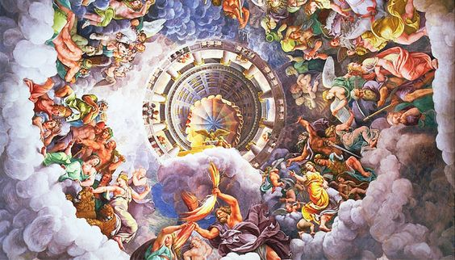

Para começar acho justo explicar o que e Mitologia  A mitologia é um sistema de crenças composta por uma série de narrativas chamadas de mito. Essas histórias buscam explicar tudo o que existe e é importante para uma sociedade os mitos são histórias que explicam a existência de diversos elementos da natureza, assimcomo ensinam sobre o comportamento humano diz o professor Pedro Menezes formado em Filosofia
Em seu artigo Professor pedro também cita que Essas narrativas e lendas compõem o imaginário coletivo de um determinado povo,formam uma tradição oral, suas histórias são contadas de geração a geração. Esses relatos fabulosos se transformam na história das coisas e em uma crença comum compartilhada por um grupo de pessoas.
A palavra mito possui sua origem no termo grego mythos que significa "narrativa". Assim, a mitologia pode ser compreendida como um conhecimento oral que visa explicar o mundo. mito é história contada oralmente composta de seres fantásticos: heróis, deuses e criaturas mitológicas. Essas são repletas de ensinamentos e formam um tipo de conhecimento,o significado de mito atualmente passou a designar eventos ou personagens que parecem romper com a lógica. Quando utilizado para pessoas, a palavra mito assume o sentido de identificar aquela pessoa a um herói, algo que está acima das pessoas comuns. Entretanto, quando é utilizado para definir eventos do passado, os mitos significam algo possivelmente falso, sem confirmação, mas que algumas pessoas acreditam.